What we are looking to solve:
Four pillars of the business (Product, Marketing, Growth and Sales) indicated that the path to sign up for customers was confusing. Customers enter the funnel from multiple different routes, and based on where they enter from (Contact sales, the store, sign up), we have differing information about them and a different introduction to Hologram.
From looking through Full Story and watching new customers convert from sign up to landing on the dashboard there was a clear repeating pattern. Customers are faced with additional steps to ‘unlock’ Hologram.
Watching back sessions, you see the customer visit each of the tabs of the dashboard to see what content lives beneath them only to find them unpopulated. This creates a bad experience as in our haste to get customers into the dashboard, we are back loading a lot of the important information and tasks we need the customer to answer and do.
To kick this off, we mapped out the existing journey of onboarding into the Hologram dashboard. By also including the steps outside of what happens on dashboard.hologram.io, it starts to give a clearer picture of the real experience of singing up to Hologram.
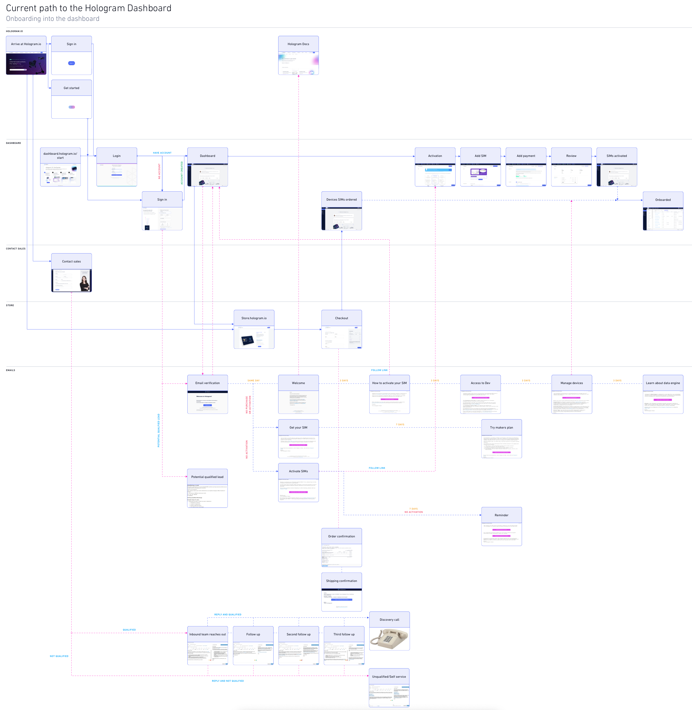 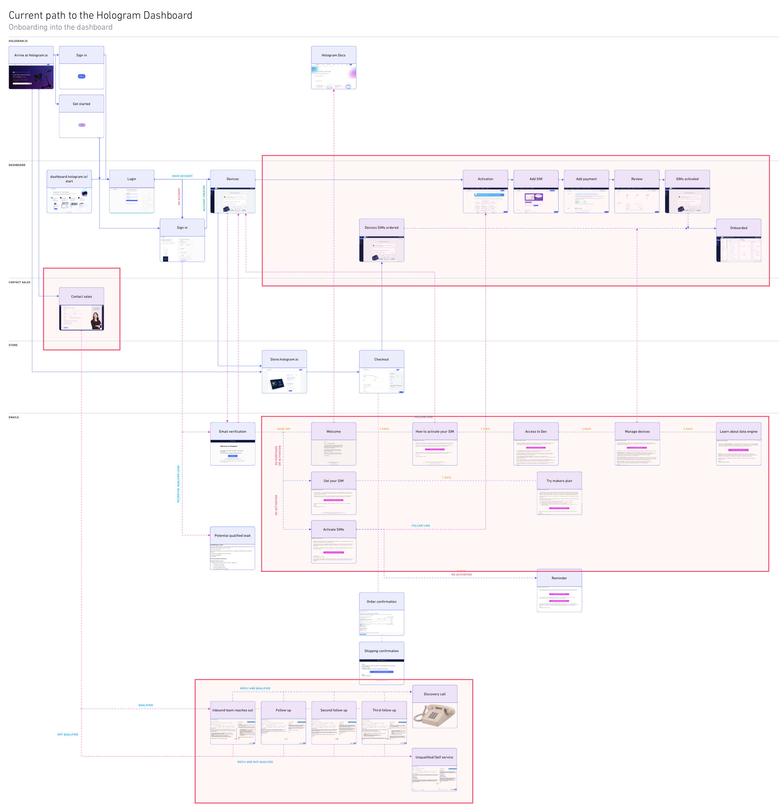In early November we organized a sprint as an opportunity for all stakeholders to get together and discuss the findings and present material related to how their segment currently interacts with new customers.
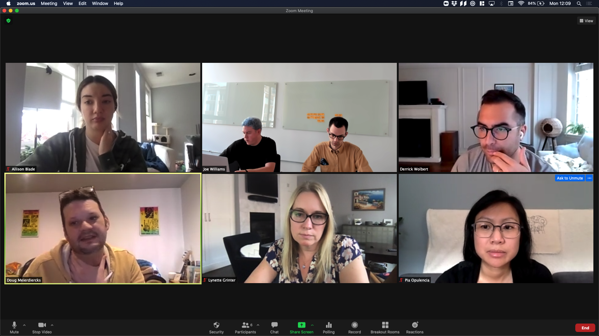Each department presented a lightning talk. A quick informative presentation outlying how their department interacts with the onboarding process.
We each independently wrote down How Might We (HMWs). HMWs are ways to capture ideas, opportunity or perspective on the content matter in a non solution orientated way.
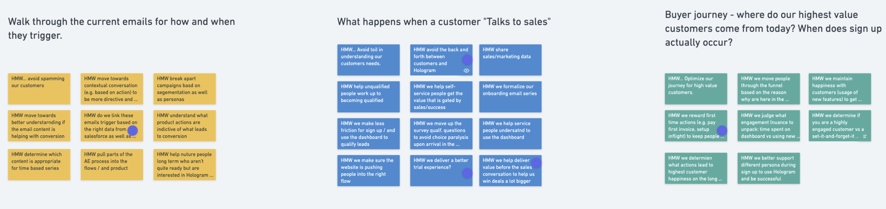 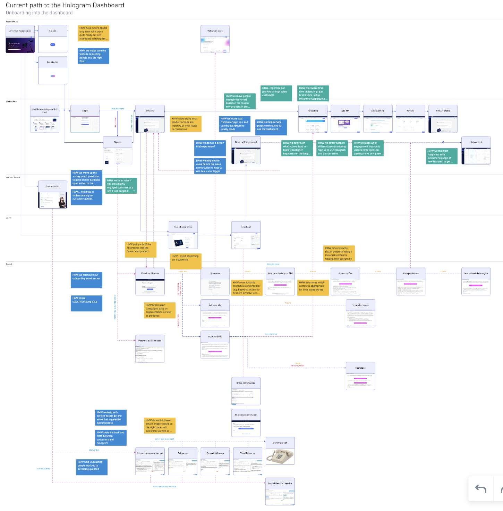 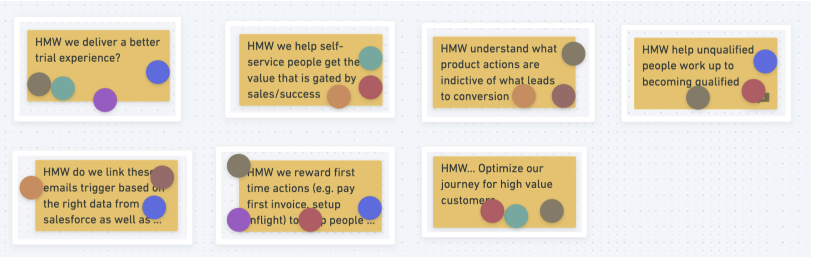Creating purposeful friction for the customer can lead to a better overall first experience of Hologram. As explored in sections above, we currently present required steps to get fully onboarded into the dashboard after a customer has created an account.
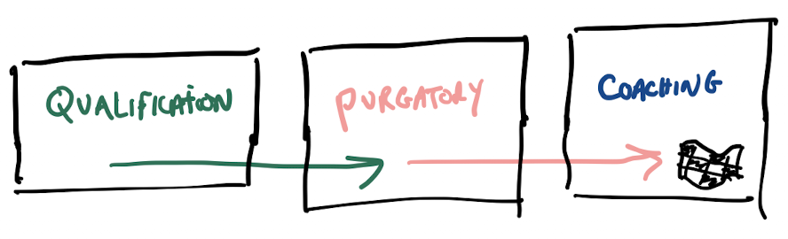 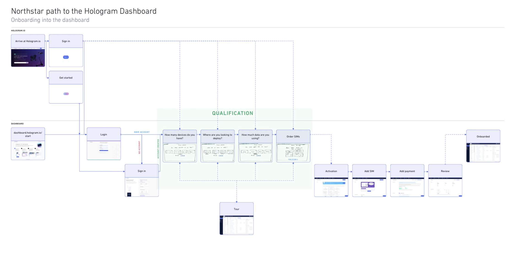 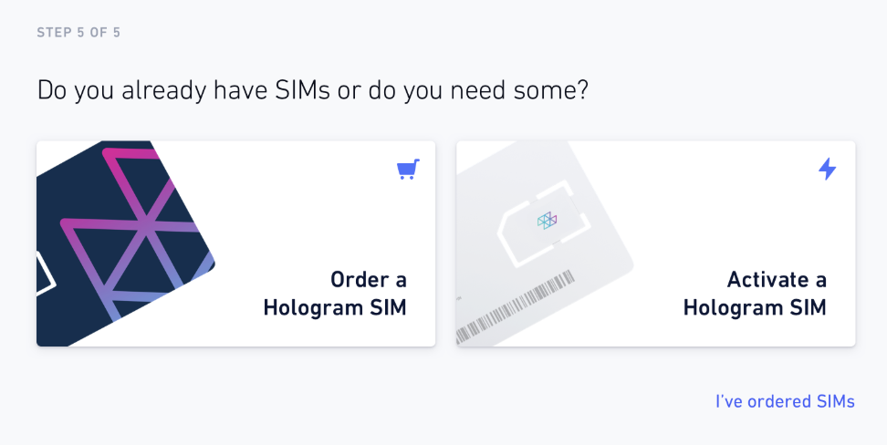 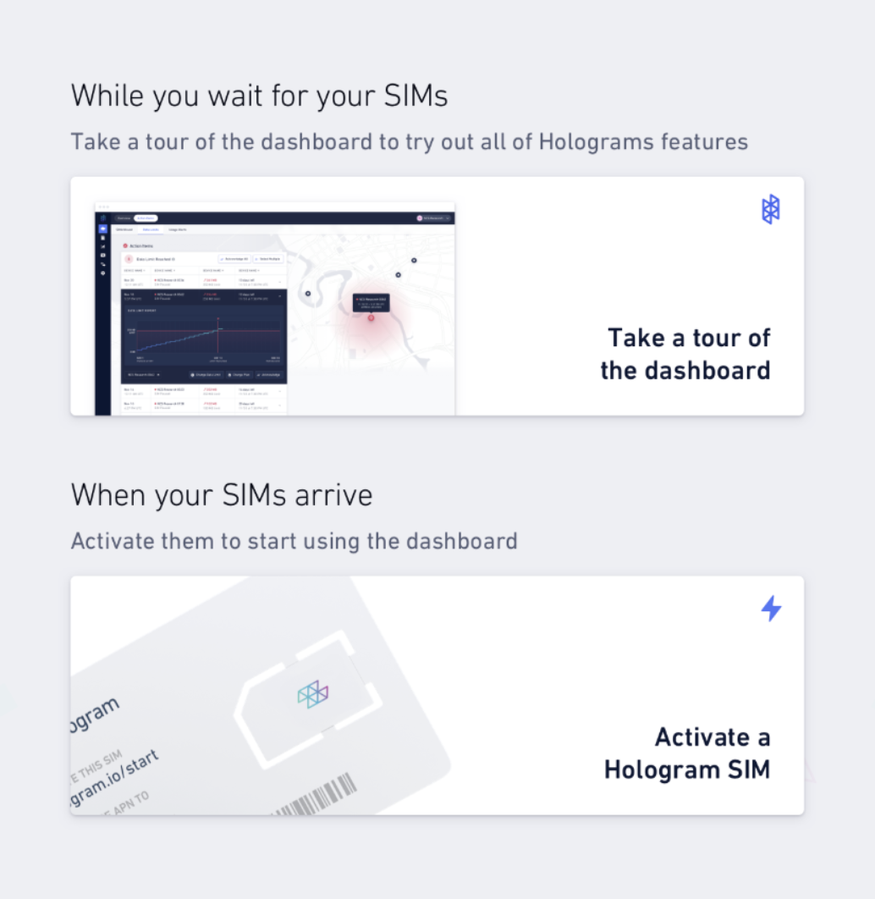 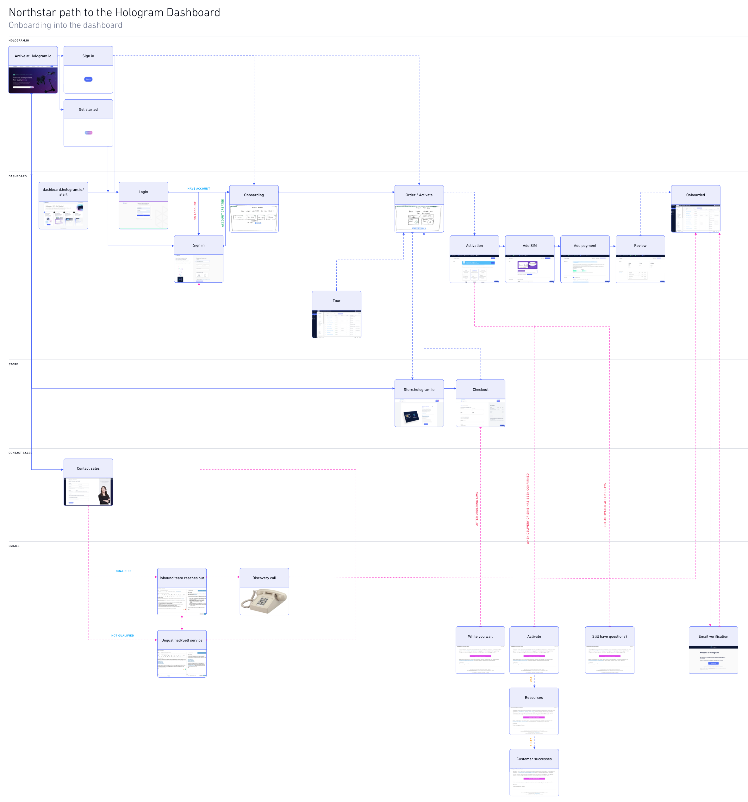 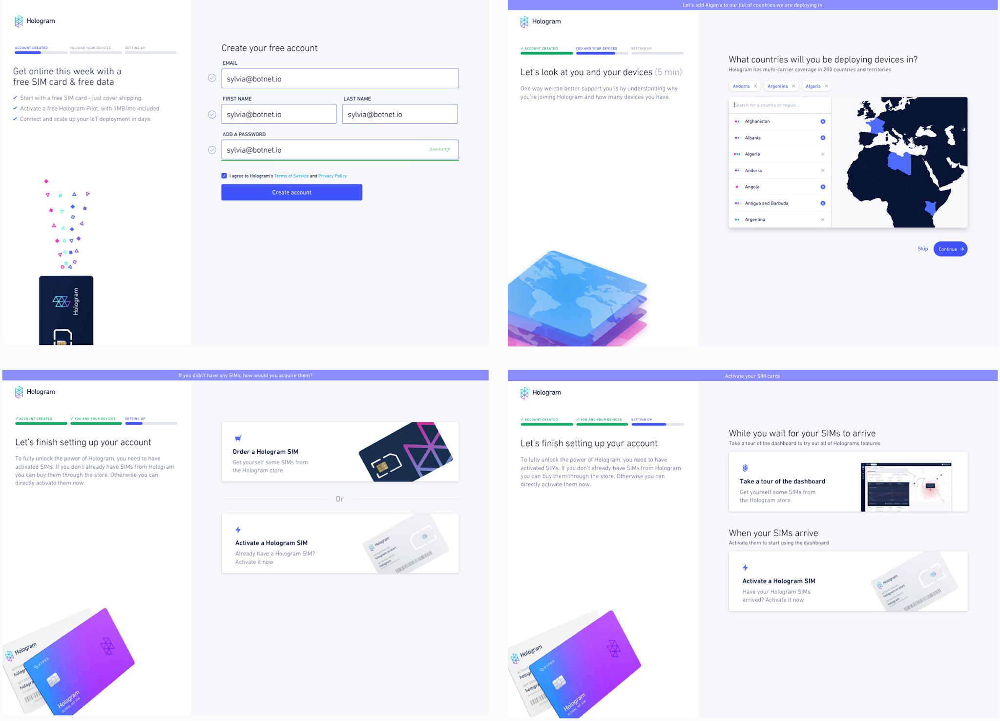